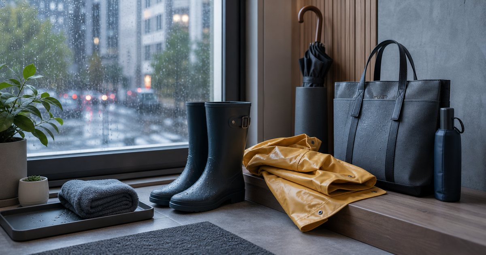

Elite Fashion｜雨天上班不失控：雨鞋、雨衣、抗風傘與包款材質的搭配清單
雨天上班的重點不是裝備越多越好，而是鞋、外層、傘與包款材質能不能一起工作，讓你進辦公室時仍保持俐落。

先決定你是步行、騎車，還是轉乘
雨天用品要先看通勤方式。步行重視傘和鞋，騎車重視外層和包款防護，轉乘則要看收納速度。
可以把 OMBRA、FULTON、UD LAB、左都雨傘、S′AIME 與 LFM 機車精品 放在同一個場合裡比較，但不要只看外型。編輯部會先看版型、重量、材質、收納、是否能和既有衣物搭配，以及它在上班、旅行或週末之間能不能轉換。
比較穩妥的順序是先確認 通勤方式、雨中停留時間和進門後收納。常見失誤是 同一套雨具想應付所有路線，最後哪裡都不順；在 捷運步行、機車通勤、開車轉步行與商務拜訪 裡，能被反覆穿用、容易保養、場合感清楚的品項，比一次買很多更實際。
- 先分通勤方式，再買雨具。
- 進辦公室後的收納位置也要先想好。
雨鞋要看辦公室可接受度
雨鞋不一定要穿一整天。若辦公室場合較正式，可以考慮進門後換鞋，或選擇外型更低調的款式。
可以把 OMBRA、FULTON、S′AIME 與 UD LAB 放在同一個場合裡比較，但不要只看外型。編輯部會先看版型、重量、材質、收納、是否能和既有衣物搭配，以及它在上班、旅行或週末之間能不能轉換。
比較穩妥的順序是先確認 鞋款是否能進辦公室、是否需要換鞋袋。常見失誤是 只看防雨，沒有想進辦公室後怎麼處理；在 客戶會議、辦公大樓與長時間站立 裡，能被反覆穿用、容易保養、場合感清楚的品項，比一次買很多更實際。
- 雨鞋和正式鞋可分開準備。
- 換鞋袋比把濕鞋亂放更體面。
雨衣和傘要依風向與收納分工
雨衣和傘不是互相取代。風大時傘可能不穩，雨衣則需要收納和晾乾位置；兩者要依路線分工。
可以把 OMBRA、FULTON、左都雨傘與 LFM 機車精品 放在同一個場合裡比較，但不要只看外型。編輯部會先看版型、重量、材質、收納、是否能和既有衣物搭配，以及它在上班、旅行或週末之間能不能轉換。
比較穩妥的順序是先確認 是否常遇到強風、騎車或雙手需要拿物品。常見失誤是 買了大傘卻沒有濕傘袋，進室內反而麻煩；在 捷運出口、停車場到辦公室與機車停車處 裡，能被反覆穿用、容易保養、場合感清楚的品項，比一次買很多更實際。
- 濕傘收納比傘面大小更常被忽略。
- 雨衣要有晾乾位置，不要塞進包裡。
包款材質要看水痕和擦拭
雨天包不只看容量。材質是否容易留水痕、是否好擦、拉鍊是否順、內袋是否能保護文件和電子用品，都很重要。
可以把 UD LAB、S′AIME、KANGOL 與 Heine 放在同一個場合裡比較，但不要只看外型。編輯部會先看版型、重量、材質、收納、是否能和既有衣物搭配，以及它在上班、旅行或週末之間能不能轉換。
比較穩妥的順序是先確認 包款是否好擦、內部分隔是否保護文件。常見失誤是 用漂亮但怕水的包硬撐雨天，回家才後悔；在 筆電通勤、文件拜訪與週末雨天外出 裡，能被反覆穿用、容易保養、場合感清楚的品項，比一次買很多更實際。
- 雨天包優先看材質和開口。
- 電子用品另放防水袋更穩。
玄關要有濕物暫放區
雨天真正讓家裡亂的是進門後。濕傘、雨衣、鞋子、包包和擦拭用品需要一個暫放區，不然雨水會被帶進客廳。
可以把 OMBRA、左都雨傘、真蓁嚴選與 S′AIME 放在同一個場合裡比較，但不要只看外型。編輯部會先看版型、重量、材質、收納、是否能和既有衣物搭配，以及它在上班、旅行或週末之間能不能轉換。
比較穩妥的順序是先確認 進門後第一步放什麼、哪裡能晾乾。常見失誤是 只準備出門雨具，沒有準備回家動線；在 租屋玄關、小宅門口與辦公室座位旁 裡，能被反覆穿用、容易保養、場合感清楚的品項，比一次買很多更實際。
- 濕物暫放區不用大，但要固定。
- 擦拭用品放玄關比放浴室更順手。
雨天清單：鞋、外層、傘、包、收尾
雨天上班的清單可以很短：鞋、外層、傘、包、收尾。每一項都只選一個穩定方案，比備很多選項更有效。
可以把 OMBRA、FULTON、UD LAB、左都雨傘、S′AIME 與 LFM 機車精品 放在同一個場合裡比較，但不要只看外型。編輯部會先看版型、重量、材質、收納、是否能和既有衣物搭配，以及它在上班、旅行或週末之間能不能轉換。
比較穩妥的順序是先確認 哪一項最常讓你狼狽，是腳、包、傘還是進門後。常見失誤是 一次買很多雨具，卻沒有一套真正順手；在 雨季上班、會議日與城市通勤 裡，能被反覆穿用、容易保養、場合感清楚的品項，比一次買很多更實際。
- 先解決最常出問題的位置。
- 雨天用品要能快速收回，不只是出門好用。
FAQ
雨天上班一定要穿雨鞋嗎？
不一定。要看路線積水、辦公室場合和是否方便換鞋。
抗風傘和雨衣怎麼選？
步行和轉乘可重視傘，騎車或雙手常拿東西則要考慮外層防護與收納。
雨天包款最該注意什麼？
材質是否好擦、開口是否穩、內部分隔是否能保護文件和電子用品。
下一步建議
如果你想讓雨天上班更體面，可以先整理鞋、外層、傘、包和進門後收尾五件事。
重要警語
本文為一般雨天通勤、服飾與包款材質情境整理，不構成安全判斷或個別產品測試。雨具與包款請依路線、天候、商品標示與個人需求選擇。
本文含品牌／商品導購連結；若你透過部分商品連結前往選購，Elite Fashion 可能取得合作收益。本文仍以編輯判斷與使用情境整理為主，價格、規格、活動與庫存請以商品頁公告為準。